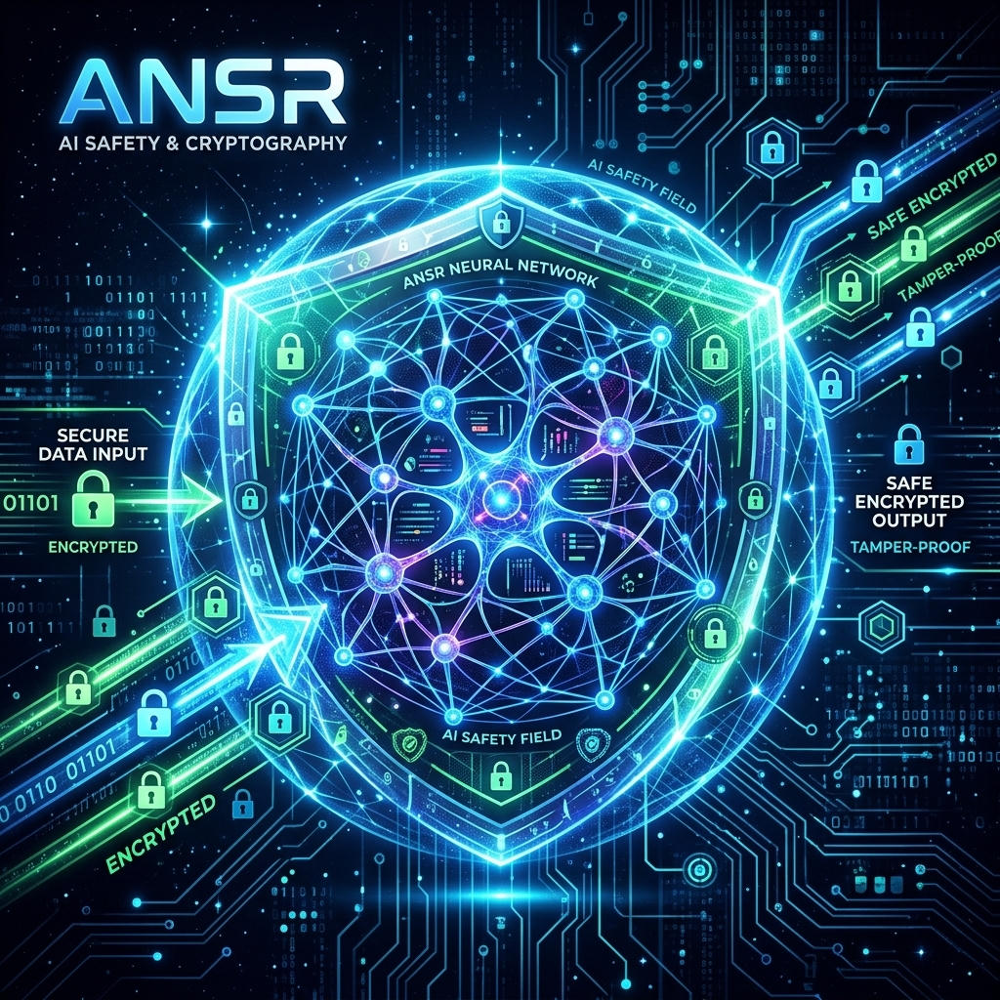

SECURE DATA INPUT
Architecting verifiable provenance and resilient neural operations for high-consequence environments.
ENTER CORE DATABASE_
TAMPER-PROOF
Deploying advanced cryptographic fields to safeguard AI output and ensure decentralized integrity.